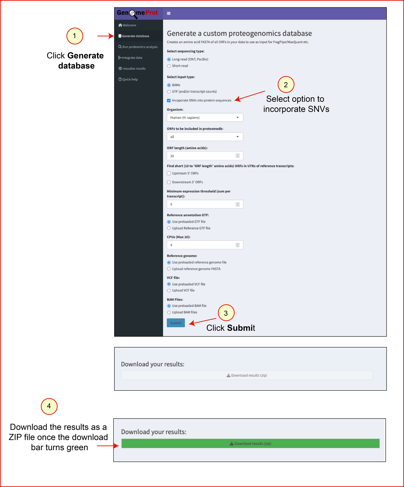
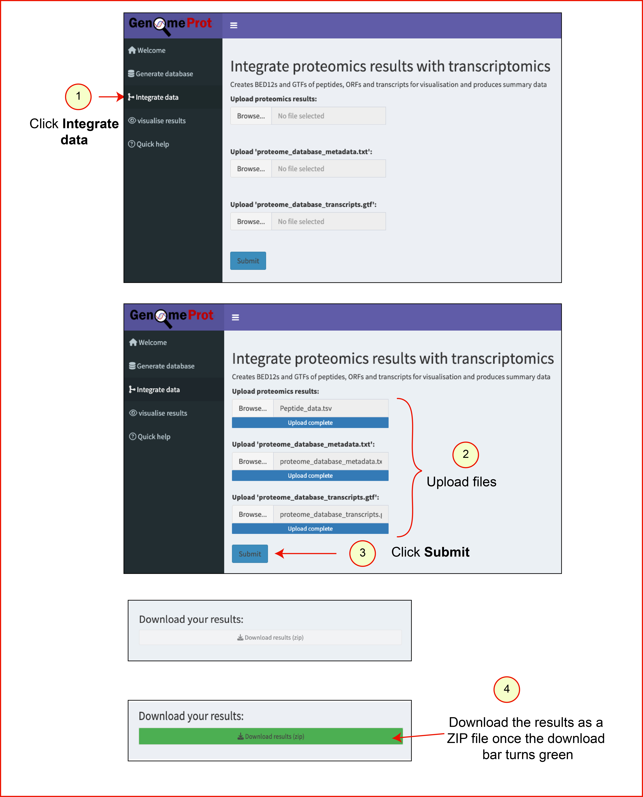

GenomeProt Help Guide
Overview
GenomeProt is a comprehensive proteogenomic analysis tool used to identify:
- Canonical proteins
- Noncanonical proteins (uORFs, dORFs, noncoding RNA–derived proteins)
- Variant peptides and proteoforms
The workflow consists of four steps:
1. Database Generation
Users can choose between short-read and long-read options depending on their data type.
The Shiny web server supports database generation using:
- Pre-aligned BAM files
- GTF file of assembled transcripts from the dataset
Users can also generate a variant-aware proteome database using an optional multisample VCF file generated from variant calls derived from the same samples.
By default, the app loads a demo dataset (BAM file input) to demonstrate processing and output files.
Files used to run the demo dataset can be downloaded below:
Steps to generate a database using the demo dataset
- Navigate to the Generate Database tab.
- Select a checkbox Incoporate SNVs into protein sequences.
- Click Submit using default options.
- The app processes the BAM file.

Output files:
proteome_database.fasta: Multi-FASTA protein databaseproteome_database_metadata.txt: TSV file containing annotations for candidate protein sequencesproteome_database_transcripts.gtf: GTF file with transcript coordinates used to generate the proteome database
Results from this step can be downloaded within the app. The test results file can be downloaded here.
Note: To generate a database directly from FASTQ files, or BAM files larger than 30 GB, use the command-line version.
Command-line instructions are available here.
2. Analyse MS Proteomics (External Step)
This step must be completed outside the Shiny application. Using the database file (.fasta) generated in Step 1, analyse the proteomics data with your preferred search algorithm to identify proteins and peptides in your dataset.
3. Integrate Data
This step maps peptides identified in Step 2 to spliced transcript coordinates.
- Files required from step 1:
proteome_database_metadata.txtandproteome_database_transcripts.gtf - Files required from step 2:
peptide_data.tsv(must follow required format)
Steps to map peptides
- Download ZIP file containing:
proteome_database_metadata.txt,proteome_database_transcripts.gtf - Extract ZIP file
- Download demo
peptide_data.tsvfrom here. - Navigate to Integrate Data tab
- Upload required files
- Click Submit
- After successful mapping, the Download results (zip) button turns green.
- Click to download output zip file.

Output directory contents:
summary_report.html: Summary report of mapped peptides, transcripts, and ORFsreport_images/: Folder containing PDF versions of graphs from the summary reportpeptide_info.tsv: Detailed peptide mapping annotationscombined_annotations.gtf: GTF file with mapped peptides and transcript coordinatespeptides.bed12: BED12 file with mapped peptide coordinates for UCSC Genome Browser visualisationtranscripts.bed12: BED12 file with transcripts supported by peptide evidence for UCSC Genome Browser visualisationORFs.bed12: BED12 file with ORFs supported by peptide evidence for UCSC Genome Browser visualisation
The demo results files can be downloaded here.
4. Visualise Results
This step visualises peptides on transcript and gene coordinates using IsoVis.
- Click Upload Data and select
combined_annotations.gtfas the stack data file (max. 3 GB). - Optional: select raw transcript counts as the heatmap data file.
- Optional: toggle the 'Show peptide data upload options (beta)' checkbox, then select the peptide intensities file from MS analysis as the peptide counts data file.
- Click Apply.
- Select your gene of interest. Start typing either its gene name or Ensembl ID into the search box, select it, then hit Enter.
- Use the different visualization options provided in IsoVis. For example, parts of the visualization can be toggled, including protein domain labels in the protein diagram.
- The entire visualization can be exported as a PNG, JPEG, PDF or SVG, and individual visualization components can be exported as SVGs.


Visualisation output:
The IsoVis visualisation displays separate tracks for peptides, ORFs and transcripts.
Users can limit their analysis to specific peptides, ORFs or transcripts of interest
by hiding irrelevant parts of the visualization and
highlighting peptides and ORFs.
Overlapping ORFs are shown using a hatching pattern. Coding regions are represented
as thick dark grey boxes. Peptides uniquely mapped to ORFs, transcripts, and genes
are indicated in orange, cyan, and blue, respectively. Multi-mapping peptides are dark grey.
For additional IsoVis details, refer to the documentation
here.